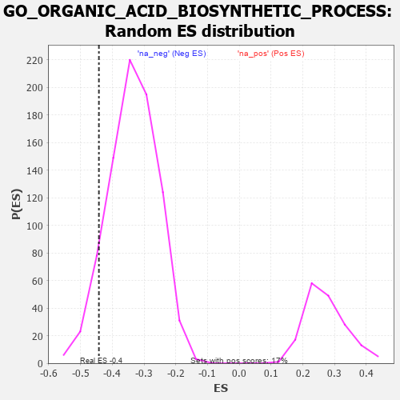

| | | Dataset | 7d |
| Phenotype | NoPhenotypeAvailable |
| Upregulated in class | na_neg |
| GeneSet | GO_ORGANIC_ACID_BIOSYNTHETIC_PROCESS |
| Enrichment Score (ES) | -0.4422222 |
| Normalized Enrichment Score (NES) | -1.3204323 |
| Nominal p-value | 0.08323281 |
| FDR q-value | 0.44887722 |
| FWER p-Value | 1.0 |
Table: GSEA Results Summary
 Fig 1: Enrichment plot: GO_ORGANIC_ACID_BIOSYNTHETIC_PROCESS
Fig 1: Enrichment plot: GO_ORGANIC_ACID_BIOSYNTHETIC_PROCESS
Profile of the Running ES Score & Positions of GeneSet Members on the Rank Ordered List
| PROBE | GENE SYMBOL | GENE_TITLE | RANK IN GENE LIST | RANK METRIC SCORE | RUNNING ES | CORE ENRICHMENT | | 1 | MTRR | | | 154 | 1.217 | 0.0228 | No |
| 2 | UGDH | | | 764 | 0.540 | -0.0354 | No |
| 3 | SDSL | | | 1137 | 0.456 | -0.0666 | No |
| 4 | GPT | | | 1488 | 0.392 | -0.0972 | No |
| 5 | LIAS | | | 1524 | 0.387 | -0.0882 | No |
| 6 | PLOD3 | | | 1715 | 0.353 | -0.1000 | No |
| 7 | MECR | | | 1838 | 0.330 | -0.1039 | No |
| 8 | OXSM | | | 1894 | 0.321 | -0.0997 | No |
| 9 | HACD3 | | | 1932 | 0.315 | -0.0935 | No |
| 10 | GPX4 | | | 1989 | 0.306 | -0.0899 | No |
| 11 | TECR | | | 2156 | 0.284 | -0.1010 | No |
| 12 | SYK | | | 2186 | 0.278 | -0.0950 | No |
| 13 | MIF | | | 2357 | 0.252 | -0.1078 | No |
| 14 | HAS1 | | | 2722 | 0.195 | -0.1470 | No |
| 15 | WDTC1 | | | 2865 | 0.172 | -0.1590 | No |
| 16 | ACLY | | | 3149 | 0.130 | -0.1902 | No |
| 17 | GCH1 | | | 3166 | 0.127 | -0.1878 | No |
| 18 | FADS1 | | | 3242 | 0.114 | -0.1934 | No |
| 19 | ILVBL | | | 3352 | 0.097 | -0.2038 | No |
| 20 | ABCD1 | | | 3677 | 0.047 | -0.2431 | No |
| 21 | HACD2 | | | 3744 | 0.035 | -0.2502 | No |
| 22 | GGT7 | | | 4200 | -0.041 | -0.3063 | No |
| 23 | MCAT | | | 4285 | -0.058 | -0.3149 | No |
| 24 | MTHFS | | | 4337 | -0.066 | -0.3191 | No |
| 25 | AMACR | | | 4338 | -0.066 | -0.3168 | No |
| 26 | ACADL | | | 4360 | -0.069 | -0.3170 | No |
| 27 | AASS | | | 4552 | -0.106 | -0.3375 | No |
| 28 | CBR1 | | | 4589 | -0.116 | -0.3380 | No |
| 29 | MTAP | | | 4675 | -0.133 | -0.3441 | No |
| 30 | DEGS1 | | | 4747 | -0.148 | -0.3480 | No |
| 31 | MYO5A | | | 4787 | -0.155 | -0.3475 | No |
| 32 | ABCD3 | | | 4829 | -0.164 | -0.3470 | No |
| 33 | BCAT1 | | | 4857 | -0.168 | -0.3446 | No |
| 34 | GATM | | | 4858 | -0.168 | -0.3387 | No |
| 35 | CBS | | | 4867 | -0.170 | -0.3338 | No |
| 36 | ACOT8 | | | 5364 | -0.288 | -0.3865 | No |
| 37 | ACOX2 | | | 5461 | -0.310 | -0.3879 | No |
| 38 | CDO1 | | | 5892 | -0.432 | -0.4272 | Yes |
| 39 | SCAP | | | 5986 | -0.466 | -0.4228 | Yes |
| 40 | XBP1 | | | 6011 | -0.475 | -0.4093 | Yes |
| 41 | RGN | | | 6233 | -0.547 | -0.4183 | Yes |
| 42 | OAT | | | 6293 | -0.572 | -0.4059 | Yes |
| 43 | ACMSD | | | 6367 | -0.603 | -0.3942 | Yes |
| 44 | SRR | | | 6464 | -0.646 | -0.3839 | Yes |
| 45 | LIPG | | | 6468 | -0.648 | -0.3618 | Yes |
| 46 | CLN3 | | | 6580 | -0.699 | -0.3515 | Yes |
| 47 | KYNU | | | 6802 | -0.816 | -0.3511 | Yes |
| 48 | ABHD3 | | | 6804 | -0.816 | -0.3229 | Yes |
| 49 | MGLL | | | 6842 | -0.838 | -0.2985 | Yes |
| 50 | MGST3 | | | 6896 | -0.865 | -0.2752 | Yes |
| 51 | CSPG4 | | | 6918 | -0.878 | -0.2474 | Yes |
| 52 | PIBF1 | | | 7049 | -0.966 | -0.2302 | Yes |
| 53 | DPYD | | | 7132 | -1.019 | -0.2052 | Yes |
| 54 | GSTM1 | | | 7256 | -1.129 | -0.1816 | Yes |
| 55 | QKI | | | 7272 | -1.145 | -0.1437 | Yes |
| 56 | ASPG | | | 7306 | -1.178 | -0.1070 | Yes |
| 57 | OTC | | | 7430 | -1.305 | -0.0772 | Yes |
| 58 | KMO | | | 7432 | -1.308 | -0.0320 | Yes |
| 59 | GGT1 | | | 7447 | -1.329 | 0.0124 | Yes |
| 60 | ASNS | | | 7595 | -1.547 | 0.0475 | Yes |
Table: GSEA details [plain text format]

Fig 2: GO_ORGANIC_ACID_BIOSYNTHETIC_PROCESS: Random ES distribution
Gene set null distribution of ES for GO_ORGANIC_ACID_BIOSYNTHETIC_PROCESS